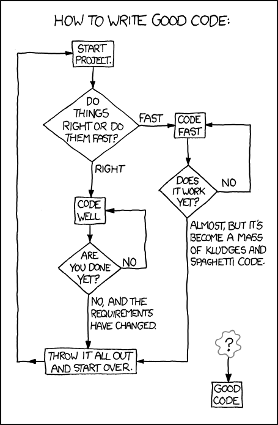

Project

The goal of this course is to enable you to develop a small programming language (extension). To demonstrate this, you will describe a language (extension), develop it, and present it to your peers.
Milestone 1 Meet with the instructor during office hours to discuss your ideas for a language (extension) by early February.
Milestone 2 Decide what your language (extension) will be about and describe it in a one-page memo. This memo is required regardless of which part of the class you’re enrolled in. It is due by end of February, before spring break.
Milestone 3 Meet with the instructor during office hours to explain your progress by March 15.
Milestone 4 Demo and present your language (extension) to your peers in class during late March and early April.
Delivery Each pair will deliver a pointer to a public GitHub repo, a presentation PDF, and a brief documentation of the grammar of the language (extension) and a brief English description of its meaning. The length of the documentation depends on your language and whether you wish to continue its development; it will not affect your grade in a positive or negative manner.
Send the PDF slides to the instructor.
Capstone For "capstone students", also write a one-page memo that describes your experience with the language-building process. Include the pointer to the repo in the memo.
Send the PDF page to the instructor.